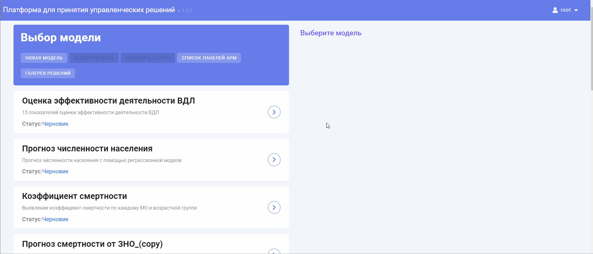
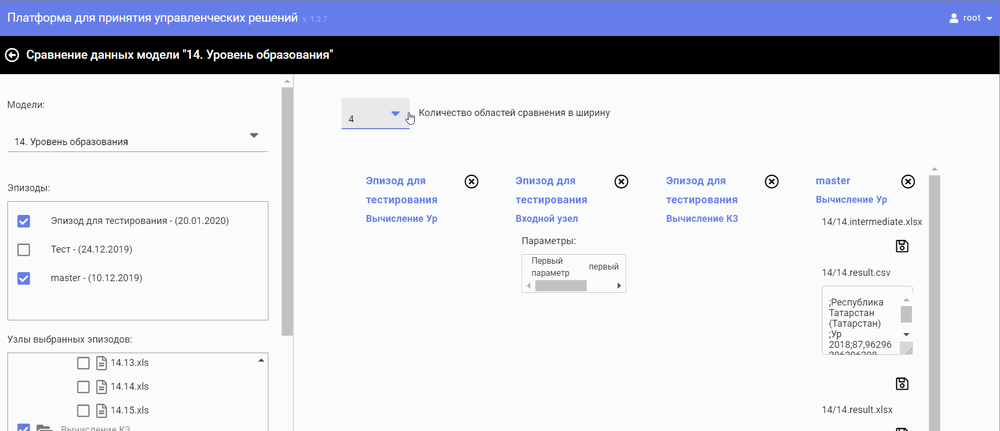
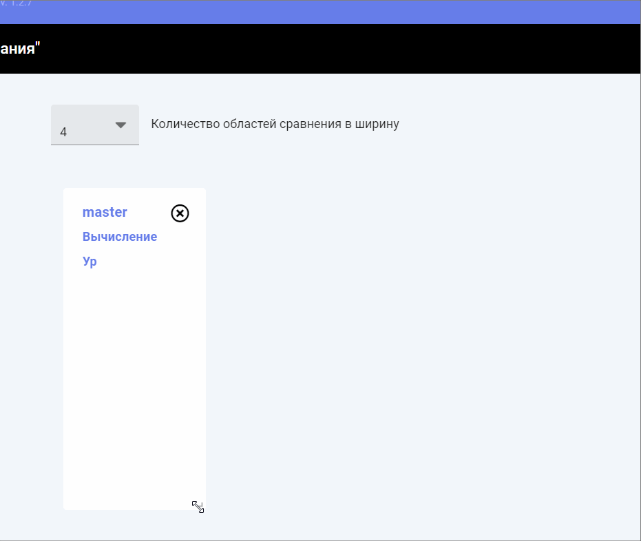

Функционал сравнения помогает провести сравнительный анализ между эпизодами одной модели. Сравнение можно выполнить:
Функционал сравнения позволяет вывести на страницу «Сравнение данных модели» графики, изображения, текстовые файлы и html-файлы из пакетов сравниваемых экземпляров узлов.
Для того чтобы провести сравнение эпизодов модели, необходимо на начальной странице системы выбрать нужную модель левой клавишей мыши. Затем есть 2 варианта открытия страницы «Сравнение данных модели»:

С выбором эпизодов – справа от списка моделей откроется панель «Эпизоды», на которой следует выбрать необходимые для сравнения эпизоды, отметив их галочкой, затем перейти по кнопке «Сравнить». Откроется страница «Сравнение данных модели» для проведения сравнительного анализа модели с выбранными эпизодами
Страница «Сравнение данных модели» визуально поделена на 2 области:
После того, как процесс сравнения был запущен, в данной области отобразится поле «Количество областей сравнения в ширину» с выпадающим списком фиксированных значений от 4 до 10 и рабочие области для сравнения. Поле «Количество областей сравнения в ширину» позволяет выбрать какое количество рабочих областей будет расположено по горизонтали. В рабочих областях будет представлена информация согласно заданным параметрам для сравнения.

Размер рабочих областей выставляется одинаковый по умолчанию, но его можно увеличить или уменьшить по желанию пользователя. Для закрытия рабочей области следует нажать на кнопку "Закрыть" в правом верхнем углу элемента.

Ниже представлен краткий обзор по установке параметров сравнения на примере модели и двух ее эпизодов.